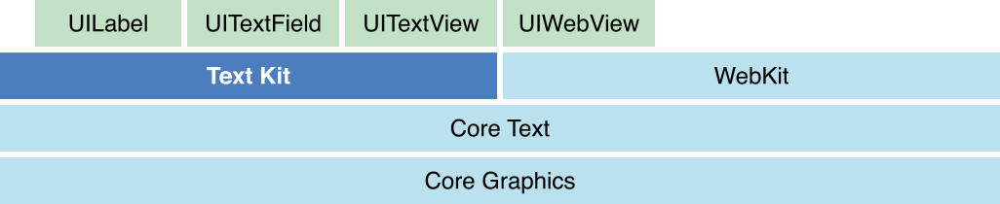
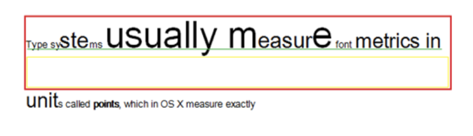
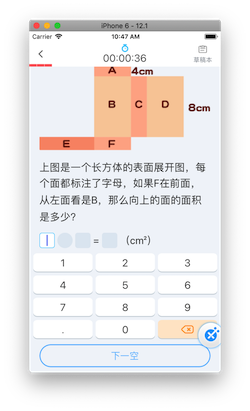

iOS 基于CoreText题型渲染引擎主题讨论
目录
前言
本次分享的主题是关于CoreText的相关应用实践，并非是纯分享CoreTextAPI的使用。CoreText如何使用，网上很多相关文章，官方也有相应的开发文档，在这里我只是做简单的铺垫。本次分享的主要目的是将“文本排版”，“文本绘制”，“图片绘制”，“图文混排”等相关的知识点串联起来，形成体系。然后通过“题型渲染引擎”和“YYText”的相关实践，来系统化的思考未来开发中可能的解决方案。
一：排版的基础
1. UILabel，UITextField,UITextView,UIWebView的文本是如何排版并显示到屏幕上的？
我们平常使用最多的是UIKit里的UILabel,UITextField,UITextView,UIWebView,他们的文字处理是都基于CoreText对文字的处理。CoreText是对字符（带有字体，字形）的位置做排版，是将排版后的数据，即字形和位置，交给CoreGraphics进行绘制，绘制的结果是bitmap图,然后交由GPU渲染。
下面是iOS7之后的UIKit文本处理的架构图如下

【图片来自官方文档】Text Kit Framework Position
2. Text纯文本的排版原理
排版的核心是把字符转换成字形，把字形排成行，把行排成段落。
字符与字形概念
- 字符：每一个字符用唯一的Unicode表示
- 字形：一个字符可以有很多个字形，也就是字的形状，包括，斜体，加粗都是不同的字形
- 字体：字符与字形的颜射，一个字符可以有多种字形
- 装饰：下划线，删除线，与字形没有关系，系统只是额外的加了一条线
- 段落：段落与字形也没有关系，只是改变字形的位置，包括缩进，对齐，方向
我们平时设置
[UIFont fontWithSystem:]方法时，就是在字体里找所应的字符的形状。字形描述集(Glyphs Metris)
那么字形本身用哪些属性来描述呢？如下面两幅图

【图片来自官方文档】Text Programming Guide for iOS

【图片来自官方文档】Text Programming Guide for iOS
字形描述
BaseLine：一条假想的参照线，以此为基础进行字形的布局
Origin：基线上最左侧的点。
Ascent：上行高度，字形的最高到baseline的高度
Descent：下行高度，字形的最低到baseline的高度
leading：行间距
Bounding Box：一个假想的边框，尽可能地容纳整个字形
通过下面的一张图可以检验是否理解了字形描述的属性

红色高度即为当前行高，绿线为baseline，绿色到红框上部分为当前行的最大Ascent，绿线到黄线为当前行的最大Desent，而黄框的高即为行间距。
- 排版过程 布局引擎要用字体把字符转换成字形，然后通过字体规格信息微调大小，用段落样式把字形放到它所该在的位置。
暂时假设，字形是图片，那么，图片怎么显示到屏幕上的呢？
3. 图片是怎样从加载到显示的？
字形我们假设是图片，那么图片又是如何从本地加载到显示到屏幕上的呢？
在这里我只是做个简短的描述，想要更为细致的研究，请参考
谈谈 iOS 中图片的解压缩
iOS 视图、动画渲染机制探究
图片显示过程如下：
- 从磁盘加载一张图片，
UIImage *image = [UIImage imageWithName:]这个时候图片并没有解压缩，UIImage里存的是未解压缩的NSData。 - 然后将生成UIImage赋值给UIImageView
- 接着一个隐士的 CATranscation，捕获UIImageView图层树的变化（Transactions是CoreAnimation的用于将多个layer tree操作批量化为渲染树的原子更新的机制）
- 在主线程的下一个runloop到来时，Core Animation 框架准备要渲染的 layer 的各种属性数据，以及要做的动画的参数，准备传递給 render server。同时在这个阶段也会解压缩要渲染的 image。
- CoreAnimation打包layer的信息以及需要做的动画的参数，通过IPC交给renderServer(动画和视图的渲染其实是在另外一个进程renderServer里进行，renderServer与GPU打交道）
4. 怎么实现图文混排呢？
我们知道了文本的排版，知道了图片的渲染，那么如何实现图文混合排版呢？在开始这个问题前，我们先想想目前有哪些已经实现了图文混排的控件。
UIWebView
UIWebView的可以实现图片，文本的混合排版。整个的实现思路我猜测，是解析HTML文件，转换成富文本，然后用CoreText进行排版，然后将排版的结果绘制成位图图片，最后将图片放到视图CALayer的content上，由CoreAnimation交个RenderServer进行渲染。当然我说的这个流程是他的渲染一个简化的流程，苹果的实现还会对JS，网络等做处理，这就是一个比较大的话题了，不过也是一个非常有趣的主题。UITextView
UITextView的实现，也是基于TextKit实现，TextKit是对CoreText的一个封装。其实我们自己也可以通过CoreText来实现我们自己的TextView。YYText就是一个典范，我们在最后会谈谈YYText的源码。
现在我们知道了文字如何排版，图片如何显示，也知道了UIWebView,UITextView等的文本，图文混排都是是基于CoreText的。那么我们怎么去实现文，图，输入框，其他自定义元素的混合排版呢？（虽然UIWebView就能满足我们的需求，当考虑到H5加载速度慢，占内存，交换缓慢，绘制在主线程这些缺陷。）
下面我们看看CoreText的细节，看能不能从中找到实现的关键手段。
二：CoreText实现图文细节
1. CoreText的API
主要类介绍
CTFramesetter,排版器
CTFrame,排版结果，我们操作绝大部分都是对里卖弄line,run，delegate做操作
CTLine,CTFrame里的代表一行
CTRun,CTFrame里带表相同属性的片段
CTRunDelegate,字符代理，供设置字形的一些属性。（哈哈，这里是不是跟我们前面一开始聊排版的字形相联系起来了，对的，这个代理就是供设置哪些字形的属性，当然前提是要那个属性可以被设置，查看好像只有Ascent,Descent,width提供代理callBack）
CoreText关键元素结构图如下

【图片来自官方文档】Core Text Programming Guide
排版流程图如下

生成对指定富文本的排版器CTFramesetter
CTFramesetterRef setter = CTFramesetterCreateWithAttributedString((CFAttributedStringRef) self.assembleAttributesString);生成排版结果CTFrame
在指定的路径范围里对指定的字符串的范围利用排版器setter进行排版，生成排版结果
CTFrameCTFrameRef frame = CTFramesetterCreateFrame(setter, CFRangeMake(0, self.assembleAttributesString.length), path, NULL);CTFrame绘制到指定的图片上下文
CGContextRef context = UIGraphicsGetCurrentContext();//取得当前的上下文 CGContextSetTextMatrix(context, CGAffineTransformIdentity);//去掉文本锯齿 CGContextTranslateCTM(context, 0, self.bounds.size.height);//转换坐标系 CGContextScaleCTM(context, 1, -1); CTFrameDraw(self.richTextData.frameRef, context);
总结下：CoreText整个的输入是富文本，输出是CTFrame。所以在将文本进行排版的前提是将排版的元素转换成富文本，特殊元素用特殊字符代替，计算好位置后在特殊元素放在特殊字符的位置就可以了,CTFrame绘制到指定的图片尚上下文（可以是在主线程，也可以是在子线程绘制）。
以下是部分核心代码
//CoreRichTextData.m
- (instancetype)initWithSentenceArray:(NSArray *)sentenceArray {
if(self = [super init]){
_sentenceArray = sentenceArray;
_assembleAttributesString = [[NSMutableAttributedString alloc]init];
[self arrangementAssembleAttributesString];
}
return self;
}
- (void)setTextBounds:(CGRect)textBounds {
_textBounds = textBounds;
[self calculateImagePosition];
}
- (void)calculateImagePosition {
//获取所有的列
NSArray *lines = (NSArray *)CTFrameGetLines(self.frameRef);
if (lines == 0) {
return;
}
CGPoint lineOrigins[lines.count];
CTFrameGetLineOrigins(self.frameRef, CFRangeMake(0, 0), lineOrigins);
for (int i = 0; i<lines.count; i++) {
CTLineRef line = (__bridge CTLineRef)lines[i];
//获取每一行的runs
NSArray *runs = (NSArray *)CTLineGetGlyphRuns(line);
for (int j = 0; j< runs.count; j++) {
CTRunRef run = (__bridge CTRunRef)runs[j];
//每一个run的属性,从run中获取先前保存的信息
NSDictionary *attributes = (NSDictionary *)CTRunGetAttributes(run);
if(!attributes){
continue;
}
//获取当前run的位置
NSDictionary *extraData = (NSDictionary *)[attributes valueForKey:kCoreExtraDataAttributeTypeKey];
if(extraData){
id<CoreItemPotocal> item = [extraData valueForKey:@"value"];//对象
if (item == nil) {
continue;
}
if ([item isKindOfClass:[CoreTextItem class]]) {
NSLog(@"这是普通文本");
}else if([item isKindOfClass:[CoreLinkItem class]]){//返回的坐标是uikit坐标（左上为起点）
NSLog(@"这是链接");
}else if([item isKindOfClass:[CoreImageItem class]]){//返回的坐标是CoreText(左下为起点)
NSLog(@"这是图片");
}
CGFloat ascent;
CGFloat desent;
CGFloat width = CTRunGetTypographicBounds(run, CFRangeMake(0, 0), &ascent, &desent, NULL);
CGFloat height = ascent + desent;
CGFloat xOffset = lineOrigins[i].x + CTLineGetOffsetForStringIndex(line, CTRunGetStringRange(run).location, NULL);
CGFloat yOffset = lineOrigins[i].y;
//coreText坐标
CGRect ctClickableFrame = CGRectMake(xOffset, yOffset, width, height);
//将CoreText坐标转换为UIKit坐标
CGRect uiKitClickableFrame = CGRectMake(xOffset, self.textBounds.size.height - yOffset - ascent, width, height);
[item.uiKitFrames addObject:[NSValue valueWithCGRect:uiKitClickableFrame]];
[item.runFrames addObject:[NSValue valueWithCGRect:ctClickableFrame]];
}
}
}
}
- (void)arrangementAssembleAttributesString {
for (int i = 0; i< self.sentenceArray.count; i++) {
id<CoreItemPotocal> item = self.sentenceArray[i];
if([item conformsToProtocol:@protocol(CoreItemPotocal)] && item.attributesStr!=nil){
[self.assembleAttributesString appendAttributedString:item.attributesStr];
}
}
}
- (CTFrameRef)frameRef {
//排版的路径范围
CGMutablePathRef path = CGPathCreateMutable();
CGPathAddEllipseInRect(path, &CGAffineTransformIdentity, self.textBounds);
//创建排版器，
CTFramesetterRef setter = CTFramesetterCreateWithAttributedString((CFAttributedStringRef) self.assembleAttributesString);
//在指定的路径里，排版哪些范围的字符
CTFrameRef frame = CTFramesetterCreateFrame(setter, CFRangeMake(0, self.assembleAttributesString.length), path, NULL);
return frame;
}
2. 需要解决的问题
网络上对CoreText的API的具体说明已经很多了，在此不在用代码快占用大量篇幅。
下面我只是将要面临的问题的思路简单说明下，想一探究竟的可以参考我的一个在GitHub上的CoreText开源示例的CoreTextDemo，或者参考唐巧老师的基于CoreText的排版引擎代码里有对这些问题的实现。
换行
CoreText的排版器，会自动换行坐标转换
UIKit的原点与CoreText的坐标原点不一样。需要做坐标转换。特殊元素（图片，自定义的view等）
图片主要是在指定的位置正确显示，用一个空白符，指定其代理方法的callBack设置空白符的大小。遍历CTFrame找到这个空白符，将其相对应的图片绘制在这个空白位置。CGContextDrawImage(context, frame, imageItem.image.CGImage);自适应高度
要能够实现自适应高度，像使用基本的UILable一样，能通过自动布局或者sizeToFit计算出高度。做的完善点还可以支持自动布局
三：基于CoreText的题型渲染引擎实践
1. 效果展示

2. 整体架构
UML结构图
题型渲染引擎的架构图如下，将要排版题目的相关数据放在TemplateRenderModel(主要承载要绘制的题目内容，编辑与非编辑状态，不同场景下的样式区分)里。TemplateRenderEngin会对TemplateRender进行解析成

- 渲染流程图

TemplateRenderModel
TemplateRenderModel里的question
{"type":"para_begin","style":"math_picture"}##{"type":"img","src":"https:// tikuqiniu.knowbox.cn/Fuh17in1YIvYokZpB4k3Wrvxdz4U","size":"big_image","id":1} ##{"type":"para_end"}##{"type":"para_begin","style":"math_text"} ##{"type":"blank","class":"fillin","size":"express","id":1}#- #{"type":"blank","class":"fillin","size":"express","id":2}#＝ #{"type":"blank","class":"fillin","size":"express","id":3}##{"type":"para_end"}#解释question字符串（不需要纠结为什么这么定义，只需要明白定义了些什么）
type:定义是什么类型的元素，段落，blank,img,audio等
style:定义段落样式,本地有样式plist文件的映射
src:像图片，audio等带有媒体资源的源
size:图片大小
id:方便在同一个上下文里区分相同类型的不同元素
class:规定元素所属的类对Html了解的同学会觉得非常像Html标记里的定义，这算是一种模仿定义吧。
TemplateRenderModel里的renderMode
typedef NS_ENUM(NSUInteger, TemplateRenderMode) { kTemplateRenderModeEdit, kTemplateRenderModePreview, kTemplateRenderModeOptionPreview,//预览选项 kTemplateRenderModeOptionEdit, //答题选项 kTemplateRenderModeEditUserAnswer, //编辑模式下填充用户答案 };解释renderMode,渲染模式，题目既可以是可编辑的，也可以是预览或者用户填充完答案的。他们的显示内容是有差别的。
字符串转富文本（数据解析过程）
//1. 解析question字符串为一个个句子，即模型化 NSArray<TextFlowParseSentenceItem *> *sentenceList = [TextFlowSentenceParser parseString:string error:&parseError]; //2. 将句子转换成段落, 即模型化 NSArray<TextFlowParagraphItem *> *textFlowParagraphs = [TextFlowParagraphParser paragraphsFromSentences:sentenceList rawString:string error:¶graphParseError]; //3.1 将句子转换成一个抽象的对象TemplateRenderEngineUnitItem 将模型化后的句子进行标准化，标准化成一个可以操作的元素。这个元素标准化成三类，一般文本，纯属性文本，特殊元素。这个特殊元素就是前面提到的用数据填充后的模板。有音频的模板，图片的，其他任何自定元素的模板。这些被填充过后的模板知道了其自身的大小。并将模板的代理设置为TemplateRenderEngin,方便对模板的操作提供交互回调。 //3.2 将整个段落转换成抽象的对象TemplateRenderEngineParagraphItem 将模型化后的句子进行标准化，标准化成一个段落元素。这个段落元素包括<TemplateRenderEngineUnitItem *>units,和样式。创建View
根据标准化的段落句子，将他们的模板所生成的view，添加到这个self.view上。TemplateRenderEngin的view就是渲染后的View。计算各元素即相应的view的位置
将self.paragraphs里的TemplateRenderEngineParagraphItem，TemplateRenderEngineUnitItem转换成特殊字符，这些特殊字符代表占位。并将转换成的富文本，进行离屏绘制，生成bitmap，记录位置。
将TemplateRenderEngineUnitItem的填充抽的模板的view进行重新设置位置。这块的内容就是利用到了上节所聊的CoreText的排版技术。
3. 可以借鉴的地方？可以优化的地方？
好的地方
- 数据,样式，模板的相分离的设计
- 离屏绘制，即单独生成一个图形生下文进行绘制
- 绘制后bitmap图片的缓存
待优化的地方
- 异步绘制优化性能？
- TemplateEngin里的数据解析应该与排版相分离
四：补充：YYText源码解析
1. YYText基于CoreText排版部分的思路

2. 我们可以借鉴的地方？
YYLabel提供异步布局与绘制功能
3. 疑问，为什么不用YYText直接实现，能不能满足需求呢?
题型渲染引擎包括的内容有题型的解析，排版，绘制。YYText包括了排版，绘制，所以题型解析的工作是逃不开的。而YYText是并不是专门做排版的，而是掺杂了TextView,label的特性的库。在一些支持一些特殊的排版问题时，是否能很好的支持，对于项目方的我们是存在很大的不确定性的。排版的机制并不是很难，我们自己做排版，虽然麻烦了点，但能掌握主动权，适应未来的需求。
五: 参考文档
Text Programming Guide for iOS
Core Text Programming Guide
谈谈 iOS 中图片的解压缩
iOS 视图、动画渲染机制探究